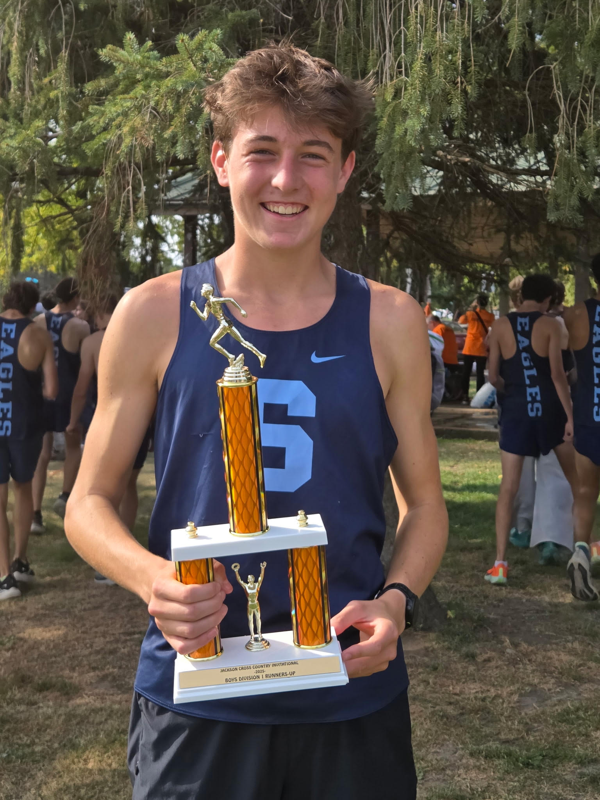
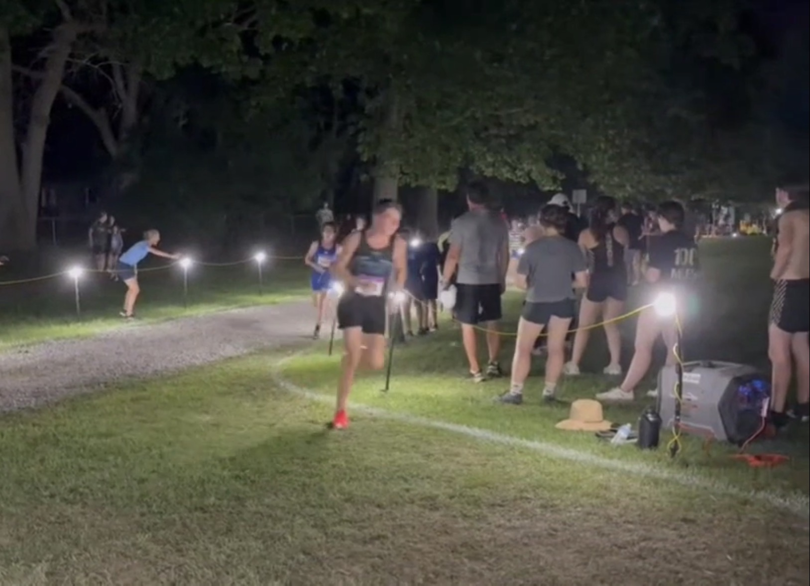

Garrett Comer
Personal record
16:43.8
About
Garrett is a junior on the skyline xc team. After a mediocre freshman year and a devestating season lasting injury his sophmore year, Garrett was more determended than ever to run well. He was one of the most consistant runners on the team getting that top 7 spot on the team every single race. He excelled in not just running but motivating, by always leading cheers and getting everyone hyped up while still staying positive. His favroite memories of the team was being at camp with everyone and playing games all day while still being full of energy. His favroite race was at holly when their team placed first and went up on stage togerther with a big trophie.
Season summary
Total meets: 12
Best time: 16:43.8
Career results
| Meet Name | Date | Level | Time | Place |
|---|---|---|---|---|
| 2025 | ||||
| Lamplighter Invitational | 2025-08-15 | V | 17:22.3 | 35 |
| 2nd Ann Arbor City Preview presented by AARC | 2025-08-27 | V | 17:40.1 | 9 |
| SEC-HS Jamboree 1 (Red/White Varsity Boys) | 2025-09-09 | V | 16:55.1 | 22 |
| 57th Annual Holly-Duane Raffin Festival of Races (D1 Boys) | 2025-09-13 | V | 16:58.4 | 28 |
| Jackson Invitational (Orange Division) | 2025-09-20 | V | 16:46.8 | 81 |
| SEC-HS Jamboree 2 (Red) (Varsity Boys) | 2025-09-25 | V | 16:55.9 | 23 |
| DeWitt Cross Country Invitational (Boys Varsity Division 1 and 2) | 2025-09-27 | V | 16:55.4 | 19 |
| 2025 Portage Invitational (Division 1) | 2025-10-04 | V | 16:49.8 | 46 |
| 20th River Rat Open / Regional Preview (All Boys) | 2025-10-10 | V | 17:16.1 | 20 |
| SEC-HS Championship (Varsity RED) | 2025-10-16 | V | 17:00.5 | 19 |
| MHSAA LP Region 04-01 @ DeWitt (C) | 2025-10-24 | V | 16:43.8 PR | 31 |
| MITCA Michigan Meet of Champions 2025 by HOKA (Boys Elite Open #2) | 2025-11-08 | V | 16:44.5 | 52 |
| 2024 | ||||
| 37th Early Bird Open (HS Open 5K) | 2024-08-29 | V | 21:04.2 | 160 |
| 2024 Portage Invitational | 2024-10-05 | V | 21:04.9 | 318 |
| 19th River Rat Open | 2024-10-11 | V | 20:34.8 | 99 |
| SEC-HS Championship | 2024-10-17 | V | 19:17.8 | 49 |
| Region 4-1 & 16-2 PROM Races | 2024-10-26 | V | 18:42.7 SR | 23 |
| 2023 | ||||
| Early Bird Open (Open Men's 5K) | 2023-08-31 | V | 19:45.4 | 67 |
| Bret Clements Bath Invitational (J.V.) | 2023-09-09 | JV | 19:16.3 | 23 |
| SEC-HS Jamboree 1 (Red/White Varsity Boys) | 2023-09-13 | V | 19:22.2 | 97 |
| Jackson Invitational - Varsity (Orange Division) | 2023-09-23 | V | 18:47.9 | 206 |
| SEC Jamboree 2 (Red) (Reserve Wave 1) | 2023-09-27 | JV | 18:36.0 | 21 |
| 2023 Portage XC Invitational (Division 1 Reserve) | 2023-10-07 | JV | 18:47.1 | 104 |
| 39th Fr Gabriel Richard Cross Country Invite (Varsity Large School) | 2023-10-14 | V | 20:06.6 | 134 |
| SEC HS Championship (All Division Reserve) | 2023-10-19 | JV | 19:21.8 | 44 |
| Post Regional Open Meet (PROM) - Springfield Oaks | 2023-10-28 | V | 18:24.6 SR | 13 |
Gallery


